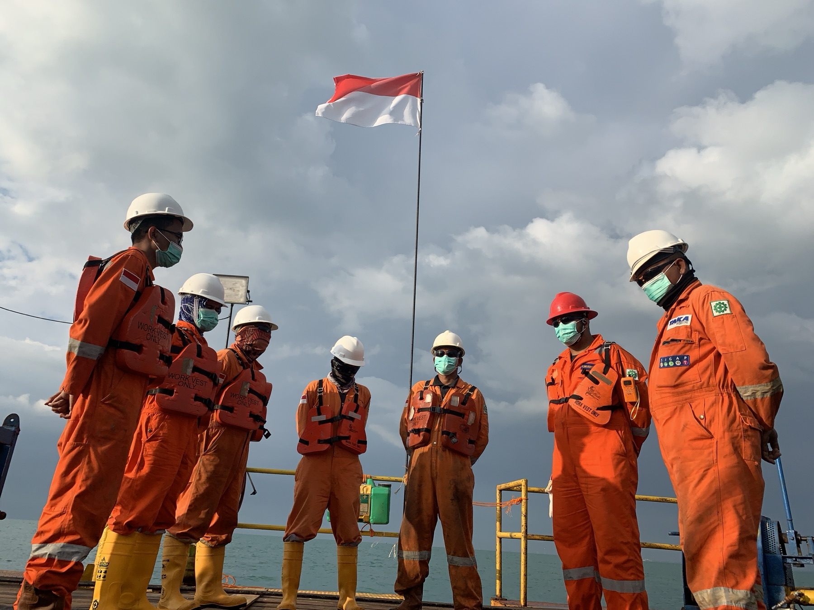

Real Work Exposure
Get involved in daily tasks related to documentation, project preparation, reporting, and department support.
Internship
THI opens internship opportunities for students who want to understand how technical projects are prepared, supported, documented, and executed in real working conditions.
Apply Internship
For students
Interns may support technical documentation, field administration, QHSE records, commercial preparation, equipment coordination, finance, HR, general affairs, or communication work depending on the department that is available at the time.
The internship is intended to help students observe how office preparation and field execution are connected in day-to-day project delivery.
Internship experience
Get involved in daily tasks related to documentation, project preparation, reporting, and department support.
Learn directly from people who work across technical, operational, QHSE, and corporate support functions.
Understand how office coordination connects with marine, nearshore, and land-based project execution.
Build professional habits around communication, safety awareness, accuracy, and responsibility.
Student profile
The program is suited for students who want to understand how a technical service company works from the inside, whether through field-related support, office coordination, data handling, QHSE administration, finance, HR, or communication work.
How to apply
Send your CV, campus background, preferred internship period, and the area you want to learn about.
The team checks whether there is a suitable department, supervisor, and work scope available.
If your background fits, the team may contact you to align schedule, expectations, and placement needs.
Accepted interns receive a placement confirmation and basic guidance before starting the program.
Intern alumni voice
“The internship helped me understand how technical preparation, team coordination, and field documentation come together before a project is executed.”
“I learned how small details in documents and schedules can affect field readiness.”
Dimas Pratama Former Operations Intern“The team gave me space to ask questions while still showing how professional work is handled.”
Nabila Putri Former Corporate Support Intern